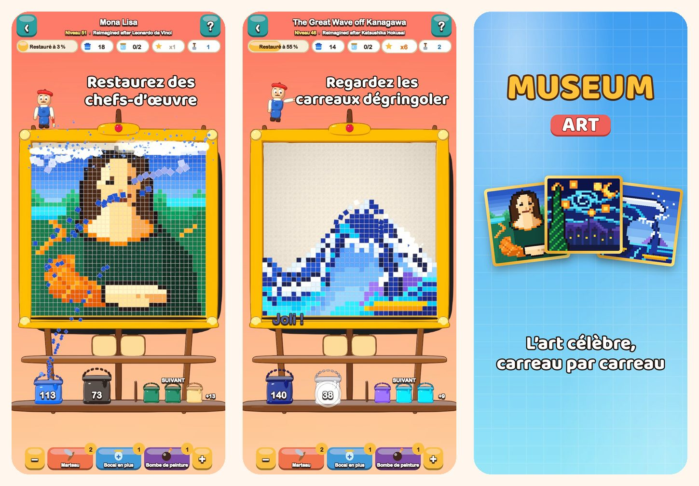

Museum Art
Puzzle de couleurs pixel art
Touchez une couleur et regardez les carreaux dégringoler. Restaurez 51 images en pixel art, de la Joconde à Istanbul, Paris, Rome et New York.
Télécharger dans l’App Store
À propos du jeu
Dans Museum Art, chaque image est faite de carreaux colorés. Retirez-les couleur par couleur et regardez l’image briller à nouveau.
COMMENT JOUER
- Touchez une zone de couleur qui touche la rangée du bas, ou un seau sur l’étagère : les carreaux s’envolent dans leur seau.
- Les carreaux du dessus glissent comme du sable et ouvrent de nouveaux coups.
- Pas encore de seau pour une couleur ? Rangez-la dans un bocal sur le plateau.
- Utilisez moins le plateau pour gagner plus d’étoiles.
51 IMAGES À RESTAURER
- Des scènes lumineuses et faciles pour commencer : une montgolfière, un voilier, un chat et un phare.
- La nature : des sommets enneigés, un lac de montagne, des cerisiers en fleurs et un désert au crépuscule.
- Un tour du monde par Istanbul, Paris, Rome et New York.
- La Salle des Maîtres : La Grande Vague, La Nuit étoilée, Les Nymphéas, La Laitière, Impression, soleil levant et la Joconde, réimaginés en pixel art.
DÉTENTE ET FAIR-PLAY
- Chaque niveau se résout sans bonus, et réessayer est gratuit.
- Des bonus pour les moments délicats : Marteau, Bocal en plus et Bombe de peinture.
- Zoomez sur les détails quand vous voulez.
- Une anecdote sur chaque image.
- Jouable en 19 langues.